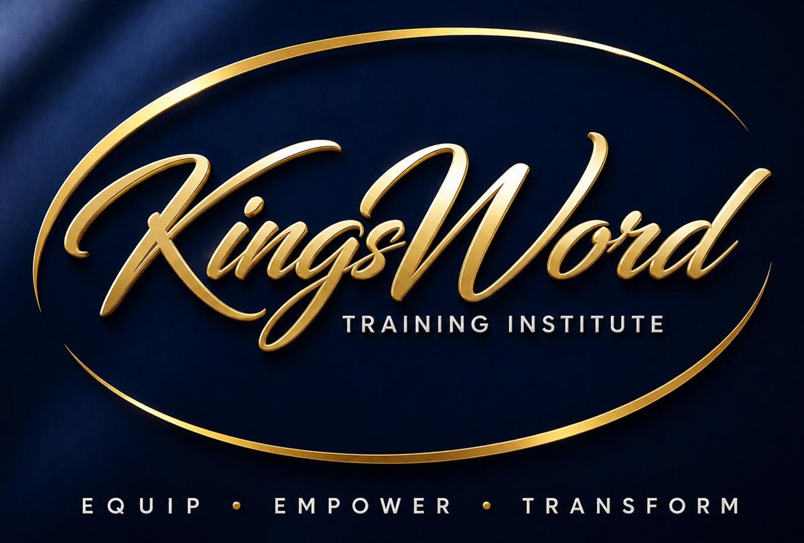

Know God's Word for yourself.
The Advanced Certificate in Biblical Studies is a comprehensive, Bible-centered training program designed to equip believers with a solid understanding of Scripture, sound doctrine, biblical interpretation, and practical Christian living, offering a balanced theological and practical foundation for lifelong discipleship and Kingdom impact.

172 Hours. Five Certificates. One Foundation.Five certificates, one coherent path.
Gain a confident, biblically grounded understanding of core Christian doctrine, from the nature of God to the believer's eternal hope, that you can explain, teach, and defend with clarity.
6 courses · What We Believe SeriesModule II · 36 hrsExpected August 2026Biblical FoundationsLearn to read, interpret, and study the Bible accurately for yourself, tracing God's redemptive story from Genesis to Revelation and recognizing Christ throughout every book.
6 courses · Unlocked SeriesModule III · 30 hrsExpected September 2026Old Testament SurveyUnderstand the full sweep of God's covenant story, book by book, from creation through the Law, history, wisdom, and prophets, and how it prepares the way for Christ.
5 courses · Exploring the Foundations of RedemptionModule IV · 30 hrsExpected October 2026New Testament SurveyGrasp the life and ministry of Jesus, the birth of the Church, and the doctrine and practice handed down through the apostles, equipping you to teach the New Testament with confidence.
5 courses · The Fulfillment of God's Redemptive PlanModule V · 40 hrsExpected November 2026Spiritual FormationMove beyond information into transformation: a renewed mind, a secure identity, and a Spirit-empowered, supernatural lifestyle you can sustain for the long term.
10 courses · Essentials of Spiritual GrowthAdvanced Certificate in Biblical Studies
KingsWord Training Institute: 172 Hours. Five Certificates. One Foundation.
About the Institute
KingsWord Training Institute exists to raise a generation of believers who know God's Word, walk in the Spirit, and communicate the Gospel with confidence. The Institute delivers rich, professionally produced theological training that fits into the rhythm of everyday life, whether at home, at work, or on the go, moving students beyond information into lasting transformation and effective ministry.
Equipping Believers. Establishing Truth. Raising a people of the Word & Spirit.
The Program
The Advanced Certificate in Biblical Studies is a comprehensive, Bible-centered training program designed to equip believers with a solid understanding of Scripture, sound doctrine, biblical interpretation, and practical Christian living, offering a balanced theological and practical foundation for lifelong discipleship and Kingdom impact.
Founder & President
Dr. Kay Ijisesan: Dr. Kay Ijisesan is the Founder & President of KingsWord Training Institute. He is an apostolic voice based in Chicago, USA. He provides oversight for multiple church campuses. Dr. Kay has over three decades of ministry experience across four continents and has published more than 100 books.
Who Should Enroll
- Pastors
- Ministry Leaders
- Bible Teachers
- Church Workers
- Small Group Leaders
- Bible School Students
- Missionaries
- New Believers
Program Outcomes
- Build a strong biblical & theological foundation, and interpret Scripture with sound hermeneutics
- Understand the message and structure of every book of the Bible
- Explain essential Christian doctrine and develop a mature, biblical worldview
- Grow in spiritual formation and apply God's Word faithfully in everyday life and leadership
- Minister effectively with biblical accuracy and spiritual confidence
- Graduate with a recognized Advanced Certificate in Biblical Studies
Program Features
- Seasoned Instructors
- Customized Textbooks
- Structured Lessons
- Course Assessments
- Modular Certificates
- Online Resources
- Enrolled Community Groups
- Opening & Closing Video Briefings
Format
Each released certificate is self-paced within a defined time limit, with structured lessons and clear assessment milestones.
Community Groups
Community groups are accessible upon enrollment and attached to each certificate module for student questions, feedback, and reflections. The groups are asynchronous rather than live chats, so students and the KingsWord team can contribute thoughtfully in the same space.
Participation is encouraged and tracked for instructor review. Thoughtful contributions are eligible for extra-credit opportunities, but they do not replace the required course assessment pass mark.
Video Briefings
Each module has an opening and closing video briefing from the Institute. These replace live chat sessions by providing clear orientation before study begins and a closing reflection when the module is complete.
Tuition
$250 per Certificate Program, or $1,000 for the Advanced Certificate, covering all five certificates in Systematic Theology, Biblical Foundations, Old Testament Survey, New Testament Survey & Spiritual Formation.
Graduation Requirements
Students receive the Advanced Certificate in Biblical Studies upon completion of all five certificate programs, required assessments, course requirements and final evaluations.
Assessment & Grading
The assessment weights below remain subject to final academic approval. Every topic quiz and course assessment uses the same 80% pass mark.
| Component | Weight |
|---|---|
| Lesson Quizzes | 30% |
| Course Assignments | 30% |
| Final Course Assessment | 40% |
Pass mark: 80%
| Grade | Range |
|---|---|
| A | 90-100 |
| B | 80-89 |
| F | Below 80 |
Enroll Today
KingsWord Training Institute · +1 773 277 8701 · kti@kingsword.org · institute.kingsword.org